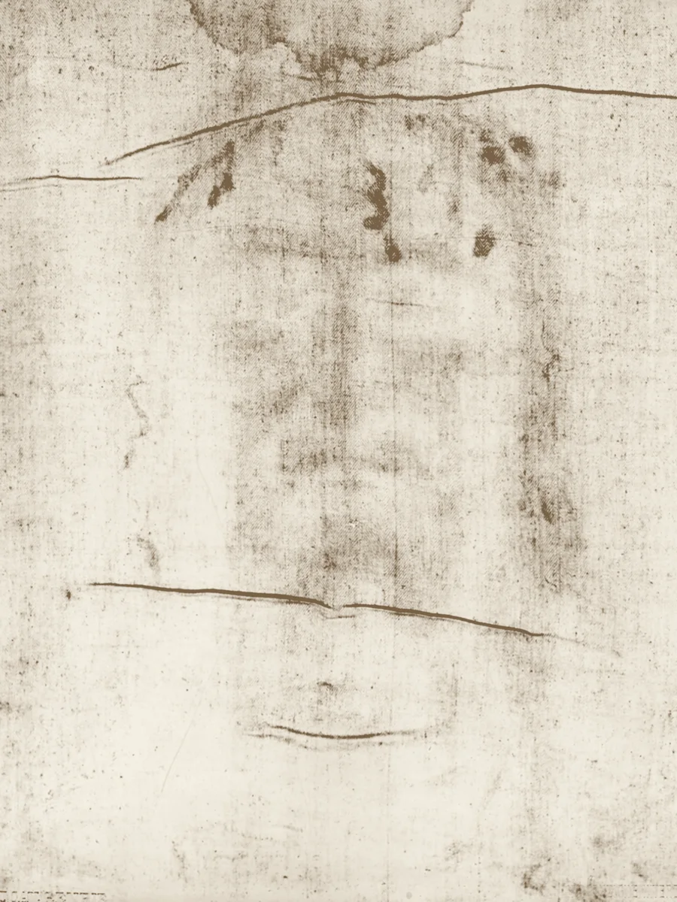
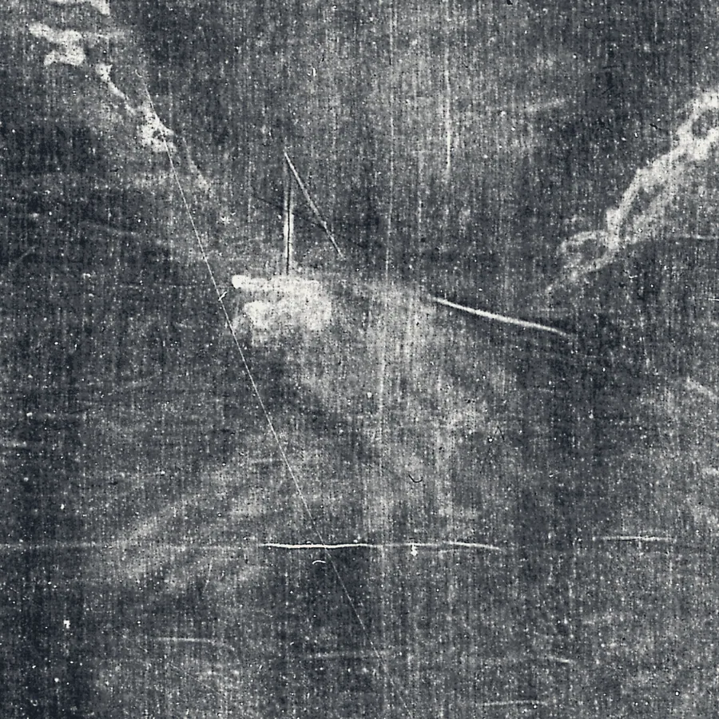

افحص كفن تورينو بنفسك
قماش من الكتان طوله 4.4 متر يحمل صورة باهتة لرجل جُلد وصُلب. يراه بعضهم تزويرًا من العصور الوسطى، ويراه آخرون كفن يسوع. هنا الأدلة من الجانبين، مع كل مصدر، لتحكم بنفسك.

 شاهد اللوح وهو يُحمَّض
شاهد اللوح وهو يُحمَّض
يوحنا 20:24-31
24 أَمَّا تُومَا، أَحَدُ ٱلِٱثْنَيْ عَشَرَ، ٱلَّذِي يُقَالُ لَهُ ٱلتَّوْأَمُ، فَلَمْ يَكُنْ مَعَهُمْ حِينَ جَاءَ يَسُوعُ.
25 فَقَالَ لَهُ ٱلتَّلَامِيذُ ٱلْآخَرُونَ: «قَدْ رَأَيْنَا ٱلرَّبَّ!». فَقَالَ لَهُمْ: «إِنْ لَمْ أُبْصِرْ فِي يَدَيْهِ أَثَرَ ٱلْمَسَامِيرِ، وَأَضَعْ إِصْبِعِي فِي أَثَرِ ٱلْمَسَامِيرِ، وَأَضَعْ يَدِي فِي جَنْبِهِ، لَا أُومِنْ».
26 وَبَعْدَ ثَمَانِيَةِ أَيَّامٍ كَانَ تَلَامِيذُهُ أَيْضًا دَاخِلًا وَتُومَا مَعَهُمْ. فَجَاءَ يَسُوعُ وَٱلْأَبْوَابُ مُغَلَّقَةٌ، وَوَقَفَ فِي ٱلْوَسْطِ وَقَالَ: «سَلَامٌ لَكُمْ!».
27 ثُمَّ قَالَ لِتُومَا: «هَاتِ إِصْبِعَكَ إِلَى هُنَا وَأَبْصِرْ يَدَيَّ، وَهَاتِ يَدَكَ وَضَعْهَا فِي جَنْبِي، وَلَا تَكُنْ غَيْرَ مُؤْمِنٍ بَلْ مُؤْمِنًا».
28 أَجَابَ تُومَا وَقَالَ لَهُ: «رَبِّي وَإِلَهِي!».
29 قَالَ لَهُ يَسُوعُ: «لِأَنَّكَ رَأَيْتَنِي يَا تُومَا آمَنْتَ! طُوبَى لِلَّذِينَ آمَنُوا وَلَمْ يَرَوْا».
30 وَآيَاتٍ أُخَرَ كَثِيرَةً صَنَعَ يَسُوعُ قُدَّامَ تَلَامِيذِهِ لَمْ تُكْتَبْ فِي هَذَا ٱلْكِتَابِ.
31 وَأَمَّا هَذِهِ فَقَدْ كُتِبَتْ لِتُؤْمِنُوا أَنَّ يَسُوعَ هُوَ ٱلْمَسِيحُ ٱبْنُ ٱللهِ، وَلِكَيْ تَكُونَ لَكُمْ إِذَا آمَنْتُمْ حَيَاةٌ بِٱسْمِهِ.
يوحنا 20:24-31, ترجمة سميث وفاندايك (ملكية عامة)
طلب توما أن يرى الآثار
بُني هذا الموقع بروح أصدق المشكّكين في الأناجيل. لم يصدّق توما ما قاله له أصدقاؤه. أراد دليلًا يراه ويلمسه: أثر المسامير، والجرح في الجنب.
يُظهر كفن تورينو رجلًا يحمل آثارًا من النوع نفسه. أما هل هو ما يعتقده كثيرون، فذلك سؤال يتركه هذا الموقع لك. سنريك الآثار والاختبارات والشكوك والردود، ونرشدك إلى كل مصدر.
ما هو
قطعة واحدة من الكتان عليها صورة أمامية وصورة خلفية لرجل عارٍ، رأسًا لرأس، إضافة إلى بقع دم وآثار حروق وبقع ماء خلّفها تاريخه الطويل. ويُحفظ في تورينو بإيطاليا منذ 1578، باستثناء فترة الحرب العالمية الثانية.
 الصورة الأمامية
الصورة الأمامية الصورة الخلفية
الصورة الخلفيةتورينو، 28 مايو 1898
الليلة التي غيّرت فيها صورة فوتوغرافية السؤال
سُمح لسيكوندو بيا، وهو محامٍ ومصوّر هاوٍ، بالتقاط أول صور فوتوغرافية للقماش. وحين حمّض لوحه الزجاجي، توقّع أن يرى صورة معكوسة كالشبح. لكن الصورة السلبية أظهرت بدلًا من ذلك صورة واضحة وطبيعية لرجل.
تتصرف الصورة على القماش مثل الصورة السلبية الفوتوغرافية: الفاتح والداكن معكوسان. ولم يلاحظ أحد ذلك من قبل، لأن أحدًا لم يرَ الصورة معكوسة إلى أن صُوّرت. ومن هنا بدأت الدراسة الحديثة للكفن.
ردّ المشكّكين: الصورة الناتجة عن ضغط قماش على نقش بارز، أو عن فرك مسحوق فوقه، تكون هي الأخرى معكوسة الدرجات. فالصورة السلبية وحدها لا تستلزم تصويرًا فوتوغرافيًا ولا معجزة. والسؤال الحقيقي هو: هل تطابق هذه الطرق كل ما عدا ذلك في الصورة؟
تحمل الصورة معلومات ثلاثية الأبعاد
في عام 1976، وضع الفيزيائي جون جاكسون والمهندس إريك جمبر صورة فوتوغرافية للكفن في جهاز VP-8 لتحليل الصور، وهو جهاز صُمّم لتحويل السطوع إلى ارتفاع. الصور العادية تخرج منه مشوّهة. أما الكفن فخرج جسدًا متماسكًا بارزًا.
والسبب أن درجة عتمة الصورة عند كل نقطة تبدو مرتبطة ببُعد القماش عن الجسد عند تلك النقطة. وكان القياس الذي يستند إليه هذا، والمنشور عام 1984، متواضعًا: 13 نقطة، بمعامل r² قدره 0.60 وهامش خطأ واسع. لكن الأثر سهل الرؤية. وهذا العرض ثلاثي الأبعاد مبني بالطريقة نفسها، مباشرة في متصفحك، من الصورة ذاتها. اسحبه لتديره.
ردّ المشكّكين: الصور المأخوذة من نقش قليل البروز، مثل الفرك فوق نقش بارز، تحمل هي أيضًا بعض معلومات العمق. وفي عام 2025، احتج مصمم ثلاثي الأبعاد هو سيسيرو موراييس، استنادًا إلى محاكاة حاسوبية، بأن الصورة تتوافق مع نقش منخفض أكثر من توافقها مع جسد كامل. والجدل يدور حول مدى مطابقة كل طريقة للقماش الحقيقي.
آثار صلب
يصف أطباء الطب الشرعي الذين درسوا الصورة أكثر من مئة جرح صغير من سوط روماني، وجروحًا وخزية حول الرأس، ووجهًا متورّمًا، وسحجات على الكتفين، وجرح مسمار في الرسغ لا في الكف، وجرحًا في الجنب بين الأضلاع نزف بعد الموت.
وهذا يتوافق مع روايات الأناجيل التي تذكر الجلد والشوك واللطم والمسامير والحربة في الجنب. وبعض التفاصيل، مثل المسمار في الرسغ، تخالف الطريقة التي اعتاد بها فنانو العصور الوسطى تصوير الصلب.

الاختبار الذي قال: العصور الوسطى
في عام 1988، أرّخت ثلاثة مختبرات في أريزونا وأكسفورد وزيورخ بالكربون عيّنات صغيرة من زاوية واحدة من القماش. وكانت نتيجتها المجمّعة، المنشورة في مجلة Nature عام 1989، بين 1260 و1390 م، بثقة 95%. هذه أقوى حجة منفردة ضد الأصالة، ونخصص لها صفحة كاملة.
ومنذ ذلك الحين، تساءل باحثون عن موضع أخذ العيّنة، وعن مدى اتساق العيّنات فيما بينها، وعن مدى دعم البيانات الخام للدقة المنشورة. وأعطت طرق تأريخ أخرى تواريخ أقدم، وإن لم تبلغ أيٌّ منها رسوخ التأريخ بالكربون المشع.
كيف وصلت الصورة إلى هناك؟
بعد أكثر من قرن من الدراسة، لا يملك أحد جوابًا كاملًا. هذا ليس شعارًا، بل هو موقع العلم اليوم. وهذه واحدة من أجرأ الفرضيات، معروضة في رسم متحرك.
الصورة ذات لون أصفر قشّي على الألياف العليا جدًا من الكتان. لا طلاء فيها، ولا ضربات فرشاة، ولا أثر لتشرّب الصورة في الخيوط. ولا تتصرف كاحتراق عادي: فآثار الحروق الحقيقية من حريق 1532 تتوهّج تحت الأشعة فوق البنفسجية، أما صورة الجسد فلا.
اقترح الباحثون الطلاء، وتمثالًا ساخنًا، ومسحوقًا مفروكًا فوق نقش بارز، وشكلًا مبكرًا من التصوير الفوتوغرافي، وتفاعلًا كيميائيًا مع غازات صادرة عن جسد، ودفقة من الإشعاع. وكل فكرة تفسّر بعض السمات وتتعثّر في غيرها.
ما يستطيعه الليزر وما لا يستطيعه
بين عامي 2005 و2010، أطلق علماء في ENEA، الوكالة الوطنية الإيطالية للتقنيات الجديدة، نبضات قصيرة جدًا من ضوء الليزر فوق البنفسجي على الكتان. وضمن نطاق ضيق من الإعدادات، لوّنوا الكتان بلون أصفر قشّي يشبه لون الكفن، من دون أن يحرقوه. وفي معظم الألياف تغلغل اللون أعمق مما هو على الكفن. وفي ليفة واحدة على الأقل بقي في الجدار الخارجي الرقيق، كما على الكفن.
وكحساب تقريبي، ضربوا شدة الليزر التي نجحت في مساحة جسم الإنسان. فكانت النتيجة نحو 34 تريليون واط، وهي أكثر بكثير من أي مصدر للأشعة فوق البنفسجية بُني حتى الآن. هذا رقم تقديري سريع لإنجاز ذلك بنبضة ليزر واحدة، وليس قياسًا لكيفية تكوّن الصورة فعلًا. وكتب المؤلفون أن «لا أحد يستطيع أن يدّعي» أن الصورة صُنعت بهذه الطريقة، وأن أصلها لا يزال مجهولًا.
وازن بنفسك
معظم الجدل حول الكفن يرجع إلى حفنة من الحقائق، وإلى الوزن الذي ينبغي أن يُعطى لكل منها. لذلك صنعنا أداة بسيطة. راجع النقاط الأساسية، وقل هل تراها صحيحة، وانظر أيّ الجانبين يتقدّم عندك.
بجانب كل نقطة ستجد أقوى حجة ضدها، لتختبر جوابك بنفسك.
إِنْ لَمْ أُبْصِرْ فِي يَدَيْهِ أَثَرَ ٱلْمَسَامِيرِ ... لَا أُومِنْ.توما، في يوحنا 20:25
لماذا ليس برهانًا
لو أراد الله أن يفرض الإيمان، لاستطاع. لكن علامة لا تترك مجالًا للشك لا تترك أيضًا مجالًا للاختيار. والكفن يفعل شيئًا أهدأ: يعطي العقل الجاد ما يكفي ليأخذ السؤال بجدية، ويترك الخطوة الأخيرة لك.
ينتهي فيديو Truthly الذي دقّقناه عند هذه الفكرة، ونرى أنها المكان الصحيح للختام. لقد أُتيح لتوما أن يرى الآثار. أما الجواب الذي تلقّاه فكان عن كل من يأتي بعده.
طُوبَى لِلَّذِينَ آمَنُوا وَلَمْ يَرَوْا.يسوع لتوما، يوحنا 20:29
أسئلة يطرحها الناس
هل كفن تورينو حقيقي؟
هو قماش كتان حقيقي وقديم جدًا. أما كونه كفن يسوع فمسألة خلافية. فقد وضعه التأريخ بالكربون عام 1988 بين 1260 و1390 م. ويعترض كثير من الباحثين على هذه النتيجة، ولم تنجح أي طريقة حتى الآن في إعادة إنتاج كل خصائص الصورة معًا. ويعرض هذا الموقع الجانبين مع المصادر.
ماذا وجد التأريخ بالكربون؟
أرّخت مختبرات في أريزونا وأكسفورد وزيورخ عيّنات من زاوية واحدة عام 1988، وأعلنت نطاق 1260 إلى 1390 م بثقة 95% (دامون وآخرون، مجلة Nature، 1989). ويرى المنتقدون أن الزاوية ربما رُمّمت، كما وجد تحليل جديد للبيانات الخام عام 2019 أن العيّنات لم تكن متسقة كما أُعلن.
هل الصورة مرسومة؟
خلص الفريق العلمي لعام 1978 (STURP) إلى أنها ليست لوحة: لم يجد صبغة تشكّل الصورة، ولا ضربات فرشاة، ولا مادة رابطة. وخالفه عالم المجهر والتر ماكرون، وأفاد بوجود أكسيد الحديد ومواد أخرى. وانحازت معظم الدراسات اللاحقة إلى STURP فيما يخص الصورة، مع الاتفاق على وجود جسيمات دقيقة من مواد كثيرة على القماش.
لماذا الصورة سلبية؟
على القماش، الفاتح والداكن معكوسان مقارنة بالصورة العادية، لذلك تبدو صورتها السلبية الفوتوغرافية كأنها صورة شخصية طبيعية. واكتشف ذلك سيكوندو بيا عام 1898. ويشير المشكّكون إلى أن الصور الناتجة عن التلامس مع نقش بارز معكوسة هي الأخرى.
ماذا تقول الكنيسة الكاثوليكية؟
لم تعلن الكنيسة رسميًا قط أن الكفن أصيل، ولا تُلزم أحدًا بالإيمان بذلك. ووصفه الباباوات في العقود الأخيرة بأنه أيقونة لآلام المسيح، وصلّوا أمامه. ويملكه الكرسي الرسولي منذ 1983، ورئيس أساقفة تورينو هو القيّم عليه.
هل يمكنني رؤيته شخصيًا؟
يُحفظ في كاتدرائية القديس يوحنا المعمدان في تورينو، داخل صندوق مضبوط المناخ، ولا يُعرض عادة على الجمهور. ويُعرض في مناسبات عامة نادرة، مثل عرضي 2010 و2015، وفي بث مباشر عام 2020.